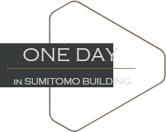

2015.12.1 公式サイト更新。 2015.12.10 公式サイト更新。 2015.12.15 公式サイト更新。 2015.12.20 公式サイト更新。  新宿住友ビルで働くOLの一日 9:00 出社 新宿にある各線路の駅からすぐ住友ビルにつきます。雨の日だとしても、地下から直通であり、自動歩道があるので、ハイヒールでも楽々！ アクセスを見る 11:00 仕事 リニューアルされたオフィスは全く新築並みの新しさです。高い天井と良い照明で更に空間のあかりを感じます。女性トイレにロッカー付きで、化粧小物の収納に心配ない！ フロア紹介を見る 12:30 ランチ オフィスビルから出なくても、地下にあるコンビニで簡単に昼ごはんを買えます。気分転換として、上のオシャレなレストランで食べてもいいでしょう！ ビル紹介を見る 15:00 打合せ お客様と打ち合わせする時、「新宿の三角ビルですよ」て一言で、相手はすぐ会社の場所が分かります。とても伝えやすい！ ビル紹介を見る 19:00 退社 一日の仕事を終えて、自分をリラックスしたいなと思ったら、近くにデパートや飲み屋街がたくさんありまして、とても便利！ 周辺施設を見る 21:00 帰宅 買い物や飲んだ後、すぐ新宿にある各駅につけるので、遅く遊んでも心配なし！ アクセスを見る

 0120-070-806
0120-070-806